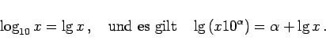
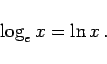
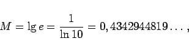
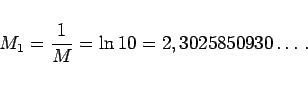
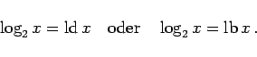

Inhalt Index DeskTop Bronstein

 Arithmetik Elementare Rechenregeln Potenzen, Wurzeln, Logarithmen Logarithmen
Arithmetik Elementare Rechenregeln Potenzen, Wurzeln, Logarithmen Logarithmen


|  | (1.24) |
|  | (1.25) |
Der Modul zur Überführung der natürlichen in dekadische Logarithmen ist
|  | (1.26) |
der zur Überführung der dekadischen in natürliche
|  | (1.27) |
|  | (1.28) |